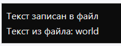
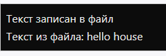

|
Большинство задач в программировании так или иначе
связаны с работой с файлами и каталогами. Нам может
потребоваться прочитать текст из файла или наоборот
произвести запись, удалить файл или целый каталог, не
говоря уже о более комплексных задачах, как например,
создание текстового редактора и других подобных задачах.
Фреймворк .NET предоставляет большие возможности по
управлению и манипуляции файлами и каталогами, которые
по большей части сосредоточены в
пространстве имен System.IO. Классы,
расположенные в этом пространстве имен (такие как Stream, StreamWriter, FileStream и
др.), позволяют управлять файловым вводом-выводом.
Класс FileStream представляет
возможности по считыванию из файла и записи в файл. Он
позволяет работать как с текстовыми файлами, так и с
бинарными.
Создание FileStream
Для создания объекта FileStream можно использовать
как конструкторы этого класса, так и статические методы
класса File.
Конструктор FileStream имеет
множество перегруженных версий, из которых
отмечу лишь одну, самую простую и используемую:
FileStream(string filename, FileMode mode)
Здесь в конструктор передается два параметра: путь
к файлу и перечисление
FileMode.
Данное перечисление указывает на режим
доступа к файлу и может
принимать следующие значения:
-
Append: если
файл существует, то текст добавляется в конец
файл. Если файла нет, то он создается. Файл
открывается только для записи.
-
Create: создается
новый файл. Если такой файл уже существует, то
он перезаписывается
-
CreateNew: создается
новый файл. Если такой файл уже существует,
то приложение выбрасывает ошибку
-
Open: открывает
файл. Если
файл не существует, выбрасывается
исключение
-
OpenOrCreate: если
файл существует, он открывается, если нет -
создается новый
-
Truncate: если файл
существует, то он перезаписывается. Файл
открывается только для записи.
Другой способ создания объекта FileStream представляют статические
методы класса File:
FileStream File.Open(string file, FileMode mode);
FileStream File.OpenRead(string file);
FileStream File.OpenWrite(string file);
Первый метод открывает файл с учетом объекта FileMode и
возвращает файловой поток FileStream.
У этого метода также есть несколько перегруженных
версий. Второй метод открывает поток для чтения, а
третий открывает поток для записи.
Закрытие потока
Класс FileStream для освобождения всех реусрсов,
связанных с файлом, реализует интерфейс IDisposable.
Соответственно после завершения работы с FileStream
необходимо освободить связанный с ним файл вызовом
метода Dispose. Для корректного закрытия можно вызвать
метод Close(), который вызывает метод Dispose:
FileStream? fstream = null;
try
{
fstream = new FileStream("note3.dat",
FileMode.OpenOrCreate);
// операции с fstream
}
catch(Exception ex)
{ }
finally
{
fstream?.Close();
}
Либо можно использовать конструкцию using, которая
автоматически освободит все связанные с FileStream
ресурсы:
using (FileStream fstream = new FileStream("note3.dat",
FileMode.OpenOrCreate))
{
// операции с fstream
}
Свойства и методы FileStream
Рассмотрим наиболее важные свойства класса FileStream:
-
Свойство Length: возвращает
длину потока в байтах
-
Свойство Position: возвращает
текущую позицию в потоке
-
Свойство Name: возвращает
абсолютный путь к файлу, открытому в FileStream
Для чтения/записи файлов можно применять следующие методы
класса FileStream:
-
void CopyTo(Stream destination): копирует
данные из текущего потока в поток destination
-
Task CopyToAsync(Stream destination): асинхронная
версия метода CopyTo
-
void Flush(): сбрасывает
содержимое буфера в файл
-
Task FlushAsync(): асинхронная
версия метода Flush
-
int Read(byte[] array, int offset, int
count): считывает данные из
файла в массив байтов и возвращает количество
успешно считанных байтов. Принимает три параметра:
-
array - массив
байтов, куда будут помещены считываемые из файла
данные
-
offset представляет
смещение в байтах в массиве array, в который
считанные байты будут помещены
-
count -
максимальное число байтов, предназначенных для
чтения. Если в файле находится меньшее
количество байтов, то все они будут считаны.
-
Task<int> ReadAsync(byte[]
array, int offset, int count): асинхронная
версия метода Read
-
long Seek(long offset, SeekOrigin origin): устанавливает
позицию в потоке со смещением на количество байт,
указанных в параметре offset.
-
void Write(byte[] array, int offset, int
count): записывает в файл данные из массива
байтов. Принимает три параметра:
-
array - массив
байтов, откуда данные будут записываться в файл
-
offset - смещение
в байтах в массиве array, откуда начинается
запись байтов в поток
-
count -
максимальное число байтов, предназначенных для
записи
-
Task WriteAsync(byte[] array, int offset,
int count): асинхронная версия
метода Write
Чтение и запись файлов
FileStream представляет доступ к файлам на уровне
байтов, поэтому, например, если вам надо считать или
записать одну или несколько строк в текстовый файл, то
массив байтов надо преобразовать в строки, используя
специальные методы. Поэтому для работы с текстовыми
файлами применяются другие классы.
В то же время при работе с различными бинарными файлами,
имеющими определенную структуру, FileStream может быть
очень даже полезен для извлечения определенных порций
информации и ее обработки.
Посмотрим на примере считывания-записи в текстовый файл:
using System.Text;
string path = @"C:\app\note.txt"; // путь к файлу
string text = "Hello METANIT.COM"; // строка для записи
// запись в файл
using (FileStream fstream = new FileStream(path,
FileMode.OpenOrCreate))
{
// преобразуем строку в байты
byte[] buffer = Encoding.Default.GetBytes(text);
// запись массива байтов в файл
await fstream.WriteAsync(buffer, 0, buffer.Length);
Console.WriteLine("Текст записан в файл");
}
// чтение из файла
using (FileStream fstream = File.OpenRead(path))
{
// выделяем массив для считывания данных из файла
byte[] buffer = new byte[fstream.Length];
// считываем данные
await fstream.ReadAsync(buffer, 0, buffer.Length);
// декодируем байты в строку
string textFromFile = Encoding.Default.GetString(buffer);
Console.WriteLine($"Текст из файла: {textFromFile}");
}
Разберем этот пример. Вначале определяем путь к файлу и
текст для записи в файл.
И при чтении, и при записи для создания и удаления
объекта FileStream используется конструкция using, по
завершению которой у созданного объекта FileStream
автоматически вызывается метод Dispose, и, таким
образом, объект уничтожается.
Поскольку операции с файлами могут занимать
продолжительное время и являются узким местом в работе
программы, рекомендуется использовать асинхронные версии
методов FileStream. И при записи, и при чтении
применяется объект кодировки Encoding.Default из
пространства имен System.Text. В данном случае мы
используем два его метода: GetBytes для получения
массива байтов из строки и GetString для получения
строки из массива байтов.
В итоге введенная нами строка записывается в файл
note.txt. И мы получим следующий консольный вывод:

Записанный файл по сути представляет бинарный файл (не
текстовый), хотя если мы в него запишем только строку,
то сможем посмотреть в удобочитаемом виде этот файл,
открыв его в текстовом редакторе. Однако если мы в него
запишем случайные байты, например:
fstream.WriteByte(13);
fstream.WriteByte(103);
То у нас могут возникнуть проблемы с его пониманием.
Поэтому для работы непосредственно с текстовыми файлами
предназначены отдельные классы - StreamReader и
StreamWriter.
Произвольный доступ к файлам
Нередко бинарные файлы представляют определенную
структуру. И, зная эту структуру, мы можем взять из
файла нужную порцию информации или наоброт записать в
определенном месте файла определенный набор байтов.
Например, в wav-файлах непосредственно звуковые данные
начинаются с 44 байта, а до 44 байта идут различные
метаданные - количество каналов аудио, частота
дискретизации и т.д.
С помощью метода Seek() мы можем управлять положением
курсора потока, начиная с которого производится
считывание или запись в файл. Этот метод принимает два
параметра: offset (смещение) и позиция в файле. Позиция
в файле описывается тремя значениями:
-
SeekOrigin.Begin: начало файла
-
SeekOrigin.End: конец файла
-
SeekOrigin.Current: текущая позиция в файле
Курсор потока, с которого начинается чтение или запись,
смещается вперед на значение offset относительно
позиции, указанной в качестве второго параметра.
Смещение может быть отрицательным, тогда курсор
сдвигается назад, если положительное - то вперед.
Рассмотрим простой пример:
using System.Text;
string path = "note.dat";
string text = "hello world";
using (FileStream fstream = new FileStream(path,
FileMode.OpenOrCreate))
{
// преобразуем строку в байты
byte[] input = Encoding.Default.GetBytes(text);
// запись массива байтов в файл
fstream.Write(input, 0, input.Length);
Console.WriteLine("Текст записан в файл");
}
// чтение части файла
using (FileStream fstream = new FileStream(path,
FileMode.OpenOrCreate))
{
// перемещаем указатель в конец файла, до конца файла-
пять байт
fstream.Seek(-5, SeekOrigin.End); // минус 5 символов с
конца потока
// считываем четыре символов с текущей позиции
byte[] output = new byte[5];
await fstream.ReadAsync(output, 0, output.Length);
// декодируем байты в строку
string textFromFile = Encoding.Default.GetString(output);
Console.WriteLine($"Текст из файла: {textFromFile}"); //
world
}
Вначале записываем в файл текст "hello world". Затем
снова обращаемся к файла для считывания. Сначала
перемещаем курсор на пять символов назад относительно
конца файлового потока:
fstream.Seek(-5,
SeekOrigin.End)
То есть после выполнения этого вызова курсор будет
стоять на позиции символа "w".
После этого считываем пять байт начиная с символа "w". В
кодировке по умолчанию 1 символ будет представлять 1
байт. Поэтому чтение 5 байт будет эквивалентно чтению
пяти сиволов: "world".
Соответственно мы получим следующий консольный вывод:

Рассмотрим чуть более сложный пример - с записью начиная
с некоторой позиции:
using System.Text;
string path = "note2.dat";
string text = "hello world";
// запись в файл
using (FileStream fstream = new FileStream(path,
FileMode.OpenOrCreate))
{
// преобразуем строку в байты
byte[] input = Encoding.Default.GetBytes(text);
// запись массива байтов в файл
fstream.Write(input, 0, input.Length);
Console.WriteLine("Текст записан в файл");
}
using (FileStream fstream = new FileStream(path,
FileMode.OpenOrCreate))
{
// заменим в файле слово world на слово house
string replaceText = "house";
fstream.Seek(-5, SeekOrigin.End); // минус 5 символов с
конца потока
byte[] input = Encoding.Default.GetBytes(replaceText);
await fstream.WriteAsync(input, 0, input.Length);
// считываем весь файл
// возвращаем указатель в начало файла
fstream.Seek(0, SeekOrigin.Begin);
byte[] output = new byte[fstream.Length];
await fstream.ReadAsync(output, 0, output.Length);
// декодируем байты в строку
string textFromFile = Encoding.Default.GetString(output);
Console.WriteLine($"Текст из файла: {textFromFile}"); //
hello house
}
Здесь также вначале записываем в файл строку "hello
world". Затем также открываем файл и опять же
перемещаемся в конец файла, не доходя до конца пять
символов (то есть опять же с позиции символа "w"), и
осуществляем запись строки "house". Таким образом,
строка "house" заменяет строку "world".
Чтобы после этого считать весь файл, сдвигаем курсор на
самое начало
fstream.Seek(0, SeekOrigin.Begin);
Консольный вывод программы:
Чтение текстового файла построчно на C#
Два самых простых способа как прочитать текстовый
файл построчно на C#. В обоих случаях используется
using System.IO;. Напишу сразу примеры кода без
всяких прелюдий.
Способ 1
Классический вариант чтения файла построчно:

Еще один пример, как можно организовать цикл
построчного чтения:

Указать кодировку при
чтении файла (например, DOS-кодировку) можно так:

Так же можно использовать обёртку using чтобы
не закрывать файл после чтения.

Способ 2
Прочитать весь файл целиком в массив строк:

Запись текста в файл построчно на C#
Три самых простых способа как записать текст в файл
построчно на C#. Во всех случаях используется using System.IO;.
Напишу сразу примеры кода без всяких прелюдий.
Способ 1
Записать текстовый файл построчно:

Чтобы добавить текстовые
данные в файл, просто укажите true после
имени файла:

В этом случае, если файл не существует, то он будет
создан новый, а если файл существует, он будет
открыт для добавления данных. Соответственно, если
второй параметр указать false, файл будет
перезаписан.
Чтобы указать
кодировку записываемого
текстового файла (например, DOS-кодировку) можно
сделать так:

Так же можно использовать обёртку using чтобы
не нужно было закрывать файл после записи.

Способ 2
Запись с использованием FileStream.

Способ 3
Записать текстовый файл целиком из массива строк:

Как получить список файлов и папок на C#
Задача получения списка файлов или папок в другой
папке часто бывает при написании программы, поэтому,
чтобы рецепт всегда был под рукой, решил написать
коротенькую статью.
Получить список файлов в папке
Для получения списка файлов можно воспользоваться
методом GetFiles.
Пример поиска файлов:

Метод GetFiles может
принимать 3 параметра, из которых первый
обязательный:
GetFiles(String path,
String pattern,
SearchOption options)
path - путь к папке, в
которой ищем файлы;
pattern - шаблон поиска
файлов (например, *.txt или ??abc.doc);
options - способ
поиска, указывающий нужно искать только в текущей
папке (SearchOption.TopDirectoryOnly) или во
вложенных тоже (SearchOption.AllDirectories).
Пример поиска
файлов по шаблону смотрите
ниже (рекурсивный поиск).
Если список файлов очень большой, тогда лучше
воспользоваться методом EnumerateFiles (доступен
в .NET Framework 4.0 и выше), т.к. в отличие от
GetFiles он возвращает IEnumerable и заполняет его
как бы асинхронно, т.е. можно приступить к перебору
списка файлов сразу, не дожидаясь получения всего
списка и тем самым увеличить скорость обработки
полученных файлов.
Метод EnumerateFiles так
же может принимать 3 параметра:
path - путь к папке, в
которой ищем файлы;
pattern - шаблон поиска
файлов;
options - способ
поиска.
Пример поиска файлов методом EnumerateFiles:

Как видим, поиск методом EnumerateFiles аналогичен GetFiles,
однако, он начнется сразу, до получения всего списка
файлов, что может быть актуальным при очень большом
количестве файлов.
Получить список папок в папке
Для получения списка папок можно воспользоваться
методом GetDirectories.
Пример поиска папок с помощью GetDirectories:

Метод GetDirectories может
принимать 3 параметра, из которых первый
обязательный:
GetDirectories(String path,
String pattern,
SearchOption options)
path - путь к папке, в
которой ищем файлы;
pattern - шаблон поиска
файлов (например, *.txt или ??abc.doc);
options - способ
поиска, указывающий нужно искать только в текущей
папке (SearchOption.TopDirectoryOnly) или во
вложенных тоже (SearchOption.AllDirectories).
По аналогии с поиском файлов, есть метод EnumerateDirectories,
который позволяет обрабатывать список папок не
дожидаясь его полного получения (доступен в .NET
Framework 4.0 и выше).
Метод EnumerateDirectories аналогично
GetDirectories принимает 3 параметра:
path - путь к папке, в
которой ищем файлы;
pattern - шаблон поиска
файлов;
options - способ
поиска.
Пример поиска папок с помощью EnumerateDirectories:

Примечание: Во всех способах
получения файлов и папок можно во втором параметре
указывать шаблон поиска pattern,
однако в нем можно использовать только * (любое
количество любых символов) и ? (один любой символ)
для указания шаблона поиска, регулярные выражения не
поддерживаются.
Получить список файлов по шаблону рекурсивно
В этом случае нужно лишь добавить 2-й параметр, в
котором указываем маску файлов и 3-й параметр,
означающий что нужно искать файлы так же во
вложенных папках.

Однако, у этого способа есть недостаток - в случае,
если в какую-то папку нет доступа, получится ошибка
и список файлов не будет получен совсем.
Рекурсивно получить список всех файлов и папок
Этот пример рекурсивного поиска файлов и папок не
прервется в случае ошибки, а продолжится дальше.
Вместо массива здесь используется List для записи
списка файлов и папок.

|